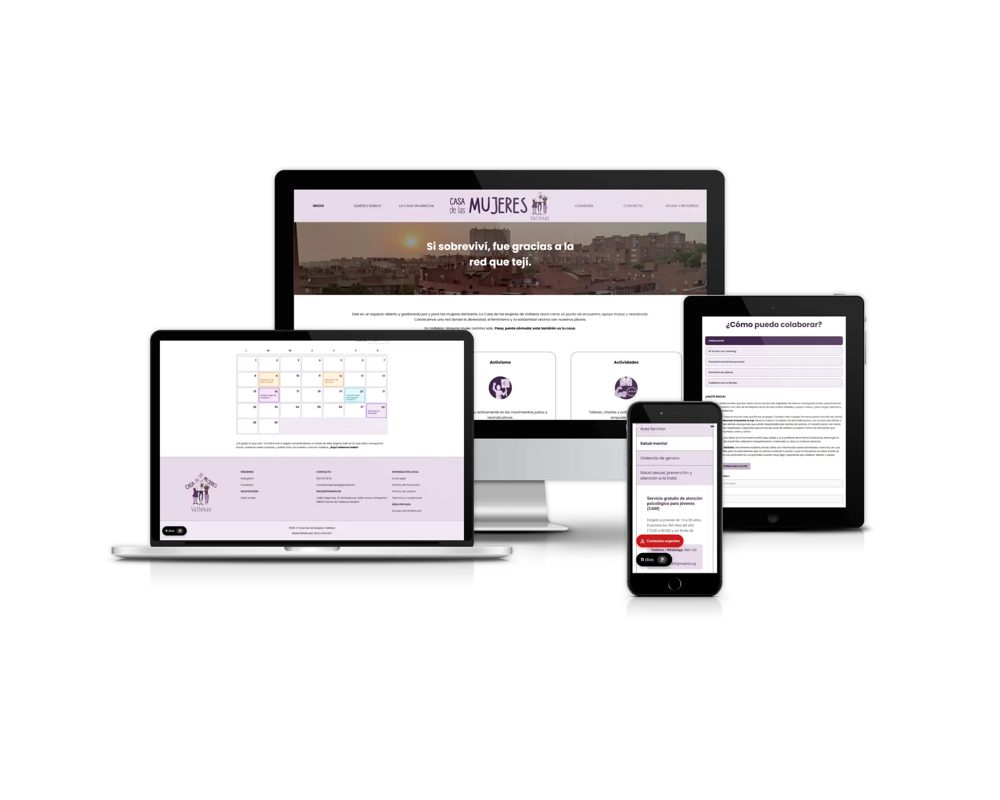
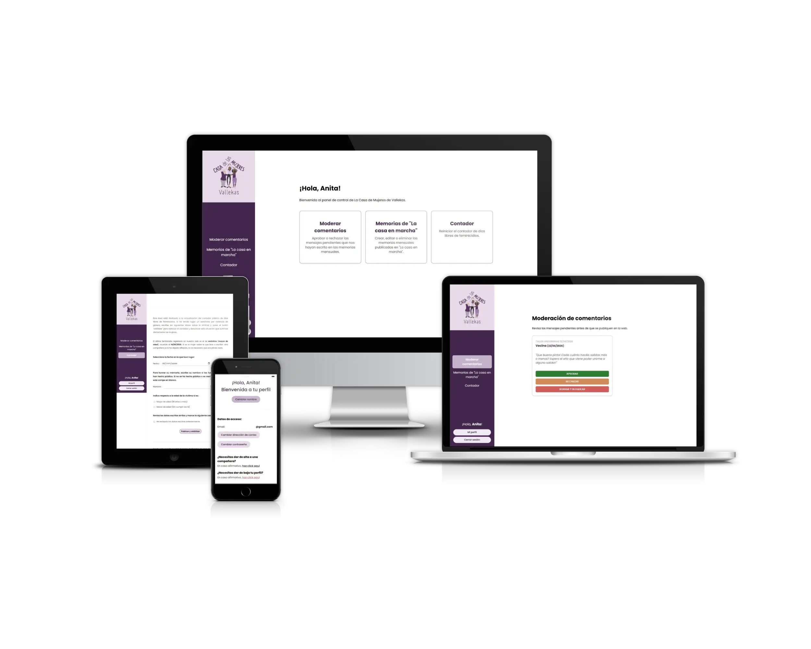
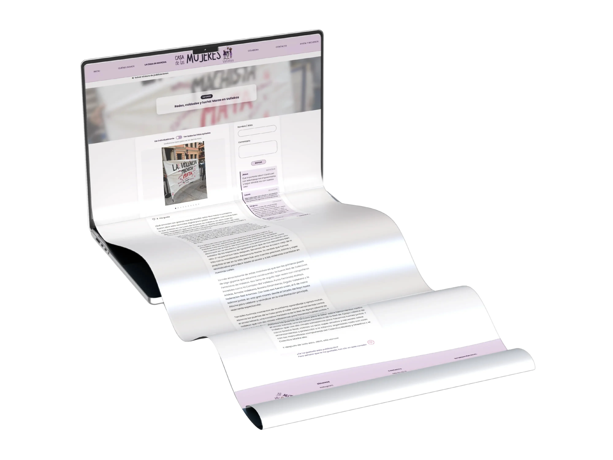
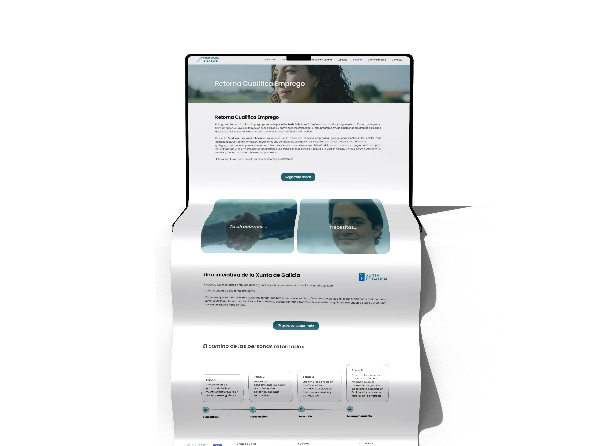
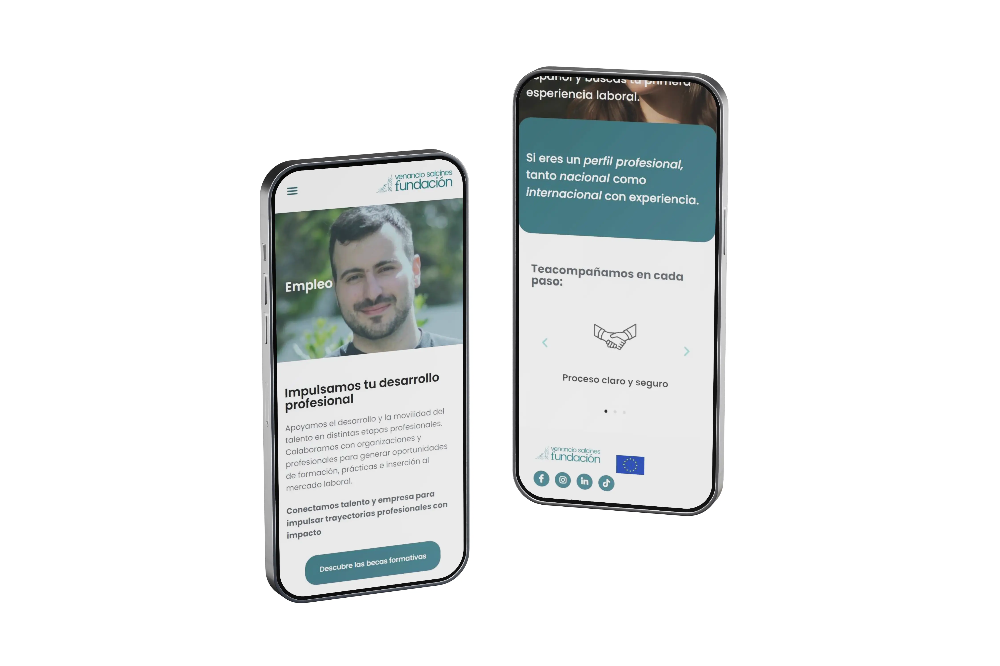
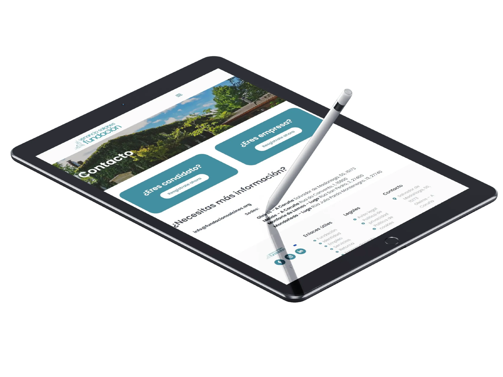
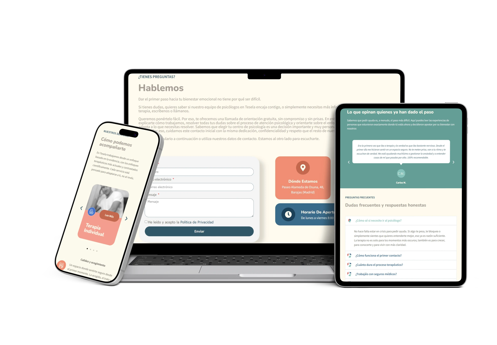
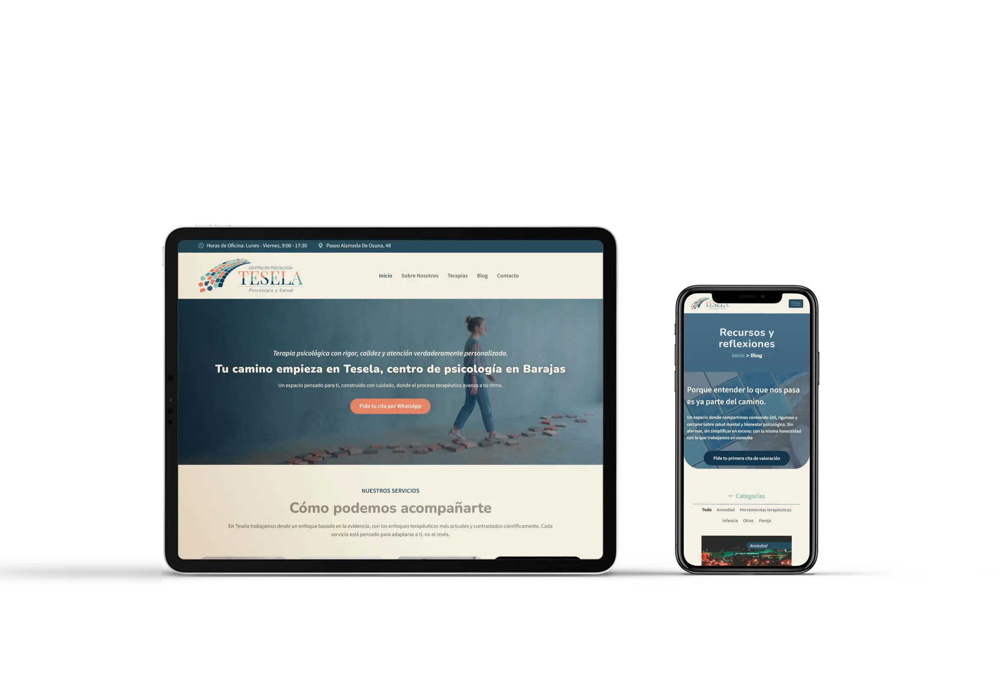

01
<Hi, I'm Ana!>
02
<UI Design>
03
<and Frontend dev>
Junior Web Developer · Frontend & WordPress
View projectsMy projects
Custom Code
Casa de las Mujeres Vallekas
End-to-end web platform developed for the Casa de las Mujeres Vallekas association, from requirements gathering to production deployment. Custom code: HTML5, CSS3, and JavaScript.
- Objective: Create a real digital presence for an association lacking technical resources, aimed at non-digital-native users who needed to manage the site autonomously.
- Result: Live website, fully self-managed by the users since launch. Verified Google Lighthouse metrics: 100/100 in Best Practices and SEO, 88/100 in Accessibility.



WordPress (Elementor)
Fundación Venancio Salcines
Complete redesign of the Foundation's digital presence, based on the client's own graphic design. The work consisted of faithfully translating their visual proposal into a functional website. Developed in WordPress with Elementor during my internship at WeJustDesign.
- Objective: Respect 100% of the visual identity defined by the client and bring it to life on a real website.
- Result: A website faithful to the client's original design and fully validated by the foundation.



WordPress (Elementor)
Tesela Psychology Clinic
Corporate website for a psychology clinic, focused on conveying trust from the very first interaction. Developed in WordPress with Elementor during my internship at WeJustDesign.
- Objective: Design a digital experience that conveys calm and safety to people seeking psychological help.
- Result: A website that brings the warmth of the clinic's physical space into the digital environment, maintaining its corporate identity and making it easier to attract new patients.

